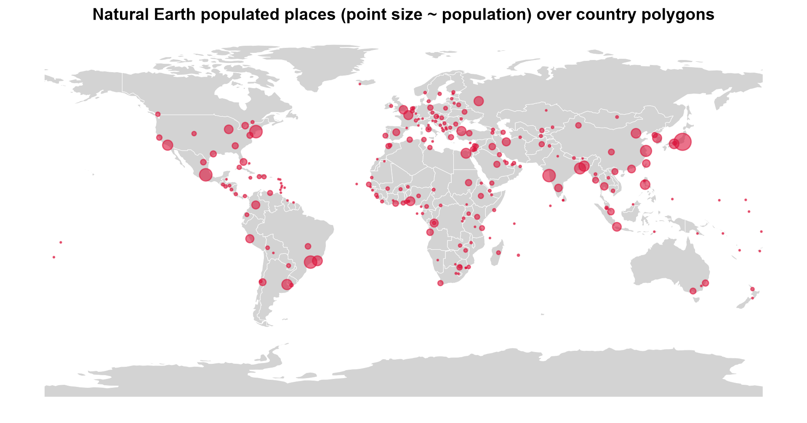
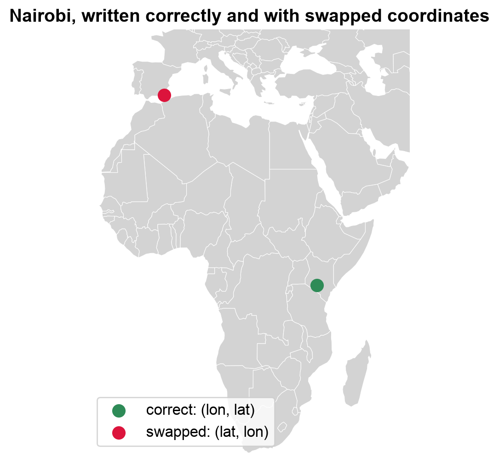
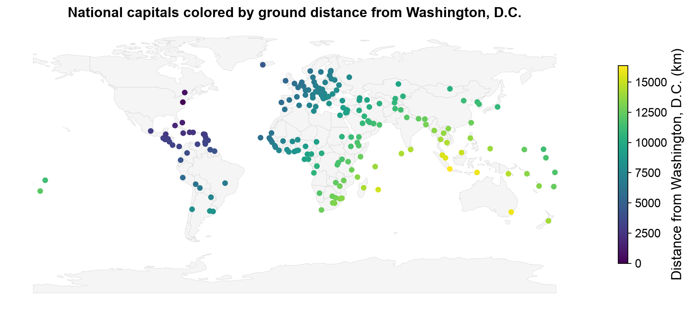
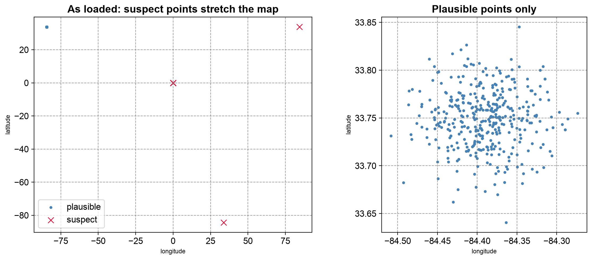

Remark
Please be aware that these lecture notes are accessible online in an ‘early access’ format. They are actively being developed, and certain sections will be further enriched to provide a comprehensive understanding of the subject matter.
3.1. Geospatial File Formats: Foundations and GeoJSON#
3.1.1. Learning Objectives#
By the end of this section, you should be able to:
Explain why file format choice affects interoperability, performance, and data fidelity.
Distinguish the format used to receive data from the format used for analysis or delivery.
Describe the structure of a GeoJSON
FeatureCollection, its geometry types, and its fixed coordinate reference system.Read, inspect, map, and write GeoJSON files in Python using GeoPandas.
Recognize a file that loads as empty, and compare what a file contains with what was loaded.
Write GeoJSON that follows the standard (WGS 84, longitude-latitude order), and avoid common writing pitfalls.
Identify common GeoJSON data-quality issues (placeholder coordinates, null geometries, duplicates, outliers) before analysis begins.
Section Goal
Geospatial data arrives in a bewildering variety of file formats. This section opens a structured tour of the formats you will encounter most often in practice — what they look like on disk, how they encode geometry and attributes, where they excel, and where they fall short. It starts with the format-selection mindset and with GeoJSON, the lightweight, web-native format you will meet constantly when working with open-data portals and APIs.
3.1.2. Why Formats Matter#
Every geospatial file format is a design trade-off. The choices made during design—text vs. binary, single file vs. multi-file, open standard vs. proprietary—have downstream consequences for interoperability, performance, file size, and the richness of data that can be stored. Choosing the wrong format for a workflow can introduce subtle errors (attribute field names silently truncated to ten characters by Shapefiles), performance problems (reading an entire file to extract a single polygon), or lock-in to proprietary software.
Understanding formats is therefore not just a technical detail—it is a prerequisite for building robust, reproducible geospatial pipelines. The next four sections each focus on one format family; this section covers the mindset that ties them together and the format you will meet the most on the open web: GeoJSON.
Design choice |
Typical options |
Consequence |
|---|---|---|
Encoding |
Text (GeoJSON) or binary (GeoPackage) |
Readability and web-friendliness versus file size and speed |
Packaging |
One file or several (Shapefile) |
Easy sharing versus components that can be separated or lost |
Standard |
Open specification or proprietary |
Long-term access and wide tool support versus lock-in |
Schema |
Enforced (databases, GeoPackage) or free-form (GeoJSON) |
Consistent types versus flexibility that can hide surprises |
3.1.2.1. Format, Storage, and Delivery Are Different Choices#
The format used to receive data does not have to be the format used for analysis or delivery. A common workflow is to preserve the original download, convert it to a GeoPackage for analysis, and export a filtered GeoJSON layer for a web map. Keeping the original file and recording the conversion steps makes the process auditable.
3.1.3. GeoJSON#
GeoJSON is a lightweight, text-based format that encodes geographic features using JavaScript Object Notation (JSON). Defined by RFC 7946 (2016) [Butler et al., 2016], it has become the de facto standard for web-based geospatial data exchange. Because it is plain JSON, any programming language can read it without a GIS library, and you can open it in a text editor to see exactly what it contains.
3.1.3.1. Structure#
A GeoJSON document is a FeatureCollection that wraps an array of Feature objects. Each Feature has three components:
type: The string"Feature".geometry: An object specifying the geometry type and its coordinates.properties: A JSON object holding any number of attribute key-value pairs.
{
"type": "FeatureCollection",
"features": [
{
"type": "Feature",
"geometry": {
"type": "Point",
"coordinates": [-93.2650, 44.9778]
},
"properties": {
"name": "Minneapolis",
"population": 429954
}
}
]
}
Three details are worth noticing:
Every object declares its kind with a
typemember. This is not decoration: GIS software relies on it to recognize features, and a file whose features omit it can load as an empty layer (see A GeoJSON File That Loads as Empty below).Properties are free-form. GeoJSON has no schema, so each feature may carry different keys and value types. Software such as GDAL and GeoPandas infers column types by scanning the data.
Some members are optional. A feature may carry an
idand abbox(bounding box), and itsgeometrymay benullfor records that have attributes but no known location.
The next cell builds this exact example in Python, writes it to disk, and reads it two ways: as plain JSON, and as a GeoDataFrame with GeoPandas [Jordahl et al., 2020]. Notice how properties become columns and geometry becomes the geometry column.
FeatureCollection with 1 feature(s)
Geometry : {'type': 'Point', 'coordinates': [-93.265, 44.9778]}
Properties: {'name': 'Minneapolis', 'population': 429954}
| name | population | geometry | |
|---|---|---|---|
| 0 | Minneapolis | 429954 | POINT (-93.265 44.9778) |
3.1.3.2. Geometry Types#
GeoJSON supports seven geometry types. The nesting depth of the coordinates array tells you which one you are looking at: a single position for a point, an array of positions for a line, an array of rings for a polygon, and so on.
Type |
Coordinates |
Typical use |
|---|---|---|
|
One position: |
A city |
|
Array of positions |
A set of monitoring stations |
|
Array of two or more positions |
A road |
|
Array of LineStrings |
A river with its branches |
|
Array of rings: the exterior ring first, then any holes |
A county |
|
Array of Polygons |
An island chain |
|
A mixed array of geometries |
Rarely used; usually avoided |
A few rules, set out in RFC 7946 [Butler et al., 2016], govern polygons and positions:
Rings are closed: the first and last positions of a ring are identical.
Winding order: RFC 7946 says exterior rings should run counterclockwise and holes clockwise (the right-hand rule), although readers are expected to accept either.
Positions may carry a third value, an elevation in meters.
The antimeridian: the standard recommends cutting geometries that cross the 180° meridian into separate parts, so they do not stretch across the whole map.
Unlike a Shapefile, one GeoJSON layer may mix types, for example Polygon and MultiPolygon features side by side; we will see this in the country boundaries below. The cell shows how a polygon with a hole is encoded: an outer ring followed by an inner ring.
{"type": "Polygon", "coordinates": [[[0.0, 0.0], [4.0, 0.0], [4.0, 4.0], [0.0, 4.0], [0.0, 0.0]], [[1.0, 1.0], [1.0, 2.0], [2.0, 2.0], [2.0, 1.0], [1.0, 1.0]]]}
Exterior ring counterclockwise: True
Hole ring counterclockwise : False
The output shows the nesting directly: the first inner array is the exterior ring and the second is the hole, and each ring repeats its first position at the end to close it. We built the rings to follow the right-hand rule, and is_ccw confirms it: counterclockwise for the exterior (True), clockwise for the hole (False).
3.1.3.3. Coordinate Reference System#
GeoJSON always uses WGS 84 (EPSG:4326) with coordinates in decimal degrees ordered as [longitude, latitude]. This is a deliberate simplification to maximize interoperability—but it means you must reproject to a metric CRS before performing distance or area calculations.
Two consequences follow:
Longitude comes first. Positions are
[x, y], which is the reverse of the “latitude, longitude” order people usually say aloud. Swapping them produces valid numbers in the wrong place, with no error message.Coordinates are angles, not lengths. Distances and areas computed directly on GeoJSON coordinates are in degrees and are not meaningful.
An earlier version of the specification (2008) allowed a crs member to declare other systems. RFC 7946 removed it [Butler et al., 2016], but older files, and some software, still write one. We will see this when we write files later in this section.
3.1.3.4. Reading GeoJSON in Python#
To keep the examples reproducible, we use two public-domain layers from Natural Earth [Natural Earth contributors, 2026], published as GeoJSON in the project’s GitHub repository.
Layer |
Geometry |
Features |
Fields used |
|---|---|---|---|
|
Point |
243 |
|
|
Polygon and MultiPolygon |
177 |
|
The first cell downloads the files (only if they are not already on disk) and reads them with read_file, which detects the format automatically. It then prints the checks you should always make after reading a GeoJSON file: how many features loaded, which CRS, and which geometry types.
places : 243 features, CRS EPSG:4326, geometry ['Point']
countries: 177 features, CRS EPSG:4326, geometry {'Polygon': 148, 'MultiPolygon': 29}
name str
adm0cap int32
pop_max int32
dtype: object
| name | adm0name | adm0cap | pop_max | geometry | |
|---|---|---|---|---|---|
| 0 | Vatican City | Vatican | 1 | 832 | POINT (12.45339 41.90328) |
| 1 | San Marino | San Marino | 1 | 29579 | POINT (12.44177 43.9361) |
| 2 | Vaduz | Liechtenstein | 1 | 36281 | POINT (9.51667 47.13372) |
| 3 | Lobamba | eSwatini | 0 | 9782 | POINT (31.2 -26.46667) |
| 4 | Luxembourg | Luxembourg | 1 | 107260 | POINT (6.13 49.61166) |
Both layers report EPSG:4326, as GeoJSON requires. The countries mix 148 Polygon and 29 MultiPolygon features (countries made of several parts, such as island nations), the mixed geometry types noted earlier. The column types of places were inferred from the values: text for names, integers for the capital flag and population. The preview follows file order rather than rank, which is why it opens with Vatican City (832 people): it is a peek at the structure, not a summary.
A first map is the quickest quality check: it confirms that the data cover the expected area and that nothing is wildly out of place. Here the country polygons form the backdrop, and each place is drawn with a point size proportional to its population.


Fig. 3.1 Natural Earth populated places over country polygons; point size is proportional to population.#
Fig. 3.1 shows the points lining up with the land masses (the isolated dots in the oceans are small island states, too small for the generalized polygons), which is what a correctly ordered [longitude, latitude] file should look like. The densest clusters are in Europe, South and East Asia, and eastern North America, and the largest symbols mark a handful of very large urban areas. Read the density with care: this is a generalized 1:110 million layer of only 243 places, so the pattern reflects the selection of places as much as where people live.
3.1.3.5. A GeoJSON File That Loads as Empty#
The earlier version of this section used a layer of world capitals, capitals.geojson, and it makes a useful cautionary example. When we loaded it with GeoPandas, the CRS printed as EPSG:4326 but the list of geometry types was empty ([]): zero features, and no error message.
The JSON itself contains 241 capitals. The cause is that none of the features declare "type": "Feature". The standard requires that member, and GDAL, the library underneath GeoPandas, does not recognize features without it. (If the maintainers have since corrected the file, the counts below will agree and the repair step becomes a harmless no-op.)
The lesson generalizes: compare what is in the file with what you loaded. The first cell counts the features in the raw JSON and compares them with the rows GeoPandas returned. Because GeoJSON is plain text, repair is easy: add the missing member and save a repaired copy, leaving the original untouched.
Features in the JSON text : 241
... of which declare 'Feature' : 0
Rows GeoPandas actually loaded : 0
Geometry types in loaded layer : []
241 capitals loaded, CRS EPSG:4326, geometry ['Point']
| id | city | country | iso2 | geometry | |
|---|---|---|---|---|---|
| 0 | BD | Dhaka | Bangladesh | BD | POINT (90.24 23.43) |
| 1 | BE | Brussels | Belgium | BE | POINT (4.2 50.5) |
| 2 | BF | Ouagadougou | Burkina Faso | BF | POINT (-1.31 12.22) |
| 3 | BG | Sofia | Bulgaria | BG | POINT (23.19 42.41) |
| 4 | BA | Sarajevo | Bosnia and Herzegovina | BA | POINT (18.25 43.52) |
The mismatch is the whole diagnosis: the JSON holds 241 features, none declares "type": "Feature", and GeoPandas loaded zero rows without raising an error. Once the member is restored, all 241 capitals load as WGS 84 points, so the coordinates were fine and the file’s structure was not.
3.1.3.5.1. Valid Does Not Mean Accurate#
A file can load correctly and still be imprecise. These capitals are listed with only two decimal places, and some positions look approximate. A cheap and effective test is to cross-check against a second source. The cell below compares the repaired layer with the Natural Earth capitals, matching on country code and measuring each offset along the Earth’s surface in kilometers. To avoid ambiguous matches, it compares only countries that have exactly one capital in the reference layer.
Compared 190 capitals against Natural Earth
count 190.0
mean 32.9
std 27.0
min 0.8
50% 32.1
90% 46.1
max 364.0
| city | name | country | offset_km | |
|---|---|---|---|---|
| 76 | Rangoon | Naypyidaw | Myanmar | 364.0 |
| 6 | Bandar Seri Begawan | Bandar Seri Begawan | Brunei | 57.0 |
| 156 | Colombo | Colombo | Sri Lanka | 56.0 |
Across the 190 comparable capitals the median offset is about 32 km and 90% fall within 46 km: invisible on a world map, but significant in any distance calculation. The largest offset in our run is a different kind of problem: the file lists the former capital of Myanmar (Rangoon) while the reference layer lists the current one (Naypyidaw). Positional error and outdated attributes both survive a perfectly valid file, which is why the metadata checklist from the data-source discussion (when was this last updated, and how was it made?) applies to GeoJSON as much as to any other format.
3.1.3.6. Longitude Comes First: Swapped Coordinates#
The most common GeoJSON mistake is writing positions as latitude, longitude. Nothing raises an error, because swapped coordinates are usually still valid numbers. Nairobi, at roughly 36.8° E and 1.3° S, written the wrong way round becomes a perfectly valid point in northern Algeria. The cell plots the correct and the swapped position side by side on the country map.


Fig. 3.2 Nairobi written as (longitude, latitude) and with the two values swapped.#
Both points in Fig. 3.2 are perfectly valid positions. The correct one, (36.81, −1.28), falls in Kenya; the swapped one, (−1.28, 36.81), lands near the northern coast of Algeria, thousands of kilometers away. A range check would not catch it: a swap breaks the bounds only when the value moved into the latitude slot exceeds 90° in magnitude, and a longitude within ±90° never does. The defences are to plot the data and to compare it with a trusted reference.
3.1.3.7. Measuring Distance Requires a Metric CRS#
Because GeoJSON coordinates are degrees, a distance computed directly on them is in degrees, which is not a length. For example, one degree of longitude spans very different ground distances at the equator and near the poles.
To measure properly, reproject first. Here we use an azimuthal equidistant projection [Snyder, 1987] centered on Washington, D.C.: in this CRS, the distance from the center to any other point is the true ground distance in meters. The first cell compares the naive and projected distances for three capitals. The second maps every capital by its distance from Washington, and checks the projected result against an independent geodesic calculation on the WGS 84 ellipsoid [Karney, 2013].
name degrees_from_dc km_from_dc
Canberra 238.0 15945.7
London 77.9 5912.5
Nairobi 120.7 12147.2
/var/folders/fd/9ctr8dys3tv3jyfrxn6_8y5m0000gp/T/ipykernel_21293/2769944042.py:11: UserWarning: Geometry is in a geographic CRS. Results from 'distance' are likely incorrect. Use 'GeoSeries.to_crs()' to re-project geometries to a projected CRS before this operation.
capitals_ne["degrees_from_dc"] = capitals_ne.geometry.distance(washington) # naive: degrees (GeoPandas warns, and rightly so)
The degree values are not distances. Canberra comes out at 238 “degrees”, more than half a circle can hold, because the naive calculation treats longitude as a flat axis and does not wrap across the antimeridian. The ratios disagree too: Nairobi is about 1.6 times London’s degree value but 2.1 times its true distance (12,147 km versus 5,913 km).


Fig. 3.3 National capitals colored by ground distance from Washington, D.C., measured in an azimuthal equidistant CRS.#
Fig. 3.3 shows a smooth gradient radiating outward from Washington: Caribbean and Central American capitals lie within about 5,000 km, Europe and western Africa at roughly 6,000 to 9,000 km, and East and South Asia and Oceania beyond 12,000 km, up to Canberra at 15,946 km. Unlike the degree values above, these numbers are real lengths, and no value can exceed half the Earth’s circumference (about 20,000 km).
Largest difference between the two methods: 0.000 km
The projected distances agree with the independent ellipsoidal calculation to well under a meter. That makes an azimuthal equidistant CRS a sound way to measure distances from its center, but only from its center: distances between other pairs of points in the same CRS are distorted.
3.1.4. Writing GeoJSON#
Writing a GeoJSON file is a single call (to_file with driver="GeoJSON"), but the result is only standard-conforming if the layer is in WGS 84 and the coordinates are in longitude-latitude order. Several pitfalls follow from the rules above and from how the GDAL writer behaves [GDAL/OGR contributors, 2026]:
Pitfall |
What happens |
Fix |
|---|---|---|
Writing a projected layer |
The default writer keeps the projected coordinates (meters) and adds a legacy |
Reproject to EPSG:4326 first, or use the |
Legacy |
Even WGS 84 files may carry a |
Use |
Swapped longitude and latitude |
Valid numbers in the wrong place |
Check bounds and plot the result |
Needless precision |
Long decimals inflate the file without adding real accuracy (six decimals is about 10 cm) |
Limit digits with the |
Large layers |
The whole file must be parsed, and there is no spatial index |
Use a binary format such as GeoPackage, or GeoJSON Text Sequences |
The first cell writes the same three places three ways and inspects the resulting JSON: with the default writer from a projected layer, after reprojecting to WGS 84, and with the RFC7946 option. The second cell writes a newline-delimited version, and compares the size of the countries layer as GeoJSON and as a GeoPackage.
1. Default writer, projected layer
members : ['type', 'name', 'crs', 'features']
crs : urn:ogc:def:crs:EPSG::5070
first position: [7117519.654, 6668305.5146]
2. Reprojected to EPSG:4326 first
members : ['type', 'name', 'crs', 'features']
crs : urn:ogc:def:crs:OGC:1.3:CRS84
first position: [12.4534, 41.9033]
3. RFC7946='YES' option
members : ['type', 'name', 'features']
crs : none
first position: [12.4534, 41.9033]
Only the third file is standard-conforming. The first keeps projected coordinates in meters ([7117519.7, 6668305.5]) and declares EPSG:5070 in a legacy crs member, so a web tool that assumes degrees would place the data far off the map. The second has degrees, but still writes a crs member, which RFC 7946 removed. The RFC7946 option writes neither problem.
GeoJSONSeq lines: 243 (one feature per line)
countries as GeoJSON : 812 KB
countries as GeoPackage: 544 KB
The binary GeoPackage is about a third smaller than the GeoJSON (544 KB versus 812 KB), even for this small, generalized layer, and the sequence file holds one line per feature. Two related formats are worth knowing by name. GeoJSON Text Sequences [Gillies, 2017] (written above) store one feature per line, which lets programs stream or append to very large layers instead of parsing one giant document. TopoJSON [Bostock and Metcalf, 2016] extends GeoJSON by storing shared boundaries once, which makes layers of adjacent polygons, such as counties or countries, considerably smaller; it is common in web visualization libraries.
3.1.4.1. When to Use GeoJSON#
Web mapping and APIs (natively supported by Leaflet, Mapbox, OpenLayers).
Sharing small to medium datasets where human readability is useful.
Quick prototyping and data exchange between tools.
Limitations:
Size: text encoding makes GeoJSON files larger than equivalent binary formats.
No index: the whole file must be parsed, even to extract a single feature, so it is not ideal for very large datasets.
Fixed CRS: everything is WGS 84 degrees, so analysis requires reprojection.
No schema: field types are inferred, and nothing prevents inconsistent values.
3.1.4.2. GeoJSON Is Only as Good as Its Source Data#
Because GeoJSON is so easy to produce from a database export or a web service, it also readily inherits that source’s data-quality problems. Point layers exported from administrative systems commonly contain:
Placeholder coordinates, such as
(0, 0), used when a location was never recorded.Null or missing geometries for records that exist only as attribute rows.
Duplicate features from repeated exports or overlapping data pulls.
Out-of-bounds outliers — a single digitizing mistake that places a feature oceans away from the rest of the dataset.
None of these problems are visible from the JSON structure alone; they surface only once you inspect counts, bounds, and geometry validity after loading the file.
You can get real-world incident-style point data for this example from the
Atlanta Police Open Data portal — choose a crime
dataset and export it as GeoJSON, or use any similar point-based 311/crime portal
(e.g. OpenDataPhilly or a city’s ArcGIS Open
Data site). These exports are real production data, so the exact quality issues
present (zero-coordinate rows, nulls, duplicates) will vary by download — that’s the
point of running the checks below rather than assuming. Save the file as
incidents.geojson in the data folder next to this notebook, or adjust the filename/path in the last cell of this section.
Because the problems in a real download vary, the cells below first build a small synthetic layer of 400 incidents around Atlanta with known defects injected: placeholder coordinates, null geometries, repeated records, and two points with coordinate mistakes. The layer is written to GeoJSON and read back, as if it had come from a portal, so that every check has something to find.
Check |
Method |
What it catches |
|---|---|---|
Null geometries |
Test for missing geometry |
Attribute-only records that cannot be mapped |
Zero coordinates |
x and y both equal to 0 |
Placeholders for “location unknown” (a point off the coast of Africa) |
Duplicates |
Compare all attributes plus the geometry |
Repeated exports or overlapping data pulls |
Outliers |
Distance from the median position |
Sign errors, swapped coordinates, digitizing mistakes |
415 features loaded from incidents_synthetic.geojson
null geometry : 6
zero coordinates : 10
duplicate row : 15
far from the rest (> 1 degree) : 2
The counts match the defects we injected: 10 placeholders, 6 null geometries, 15 repeated records, and 2 far-away points (the 415 rows are the original 400 plus the 15 repeats). The numbers show that problems exist; a map shows how they distort the data. The left panel plots the layer as loaded: the few suspect points sit thousands of kilometers from the real cluster, which collapses into a dot. The right panel shows the plausible points only.


Fig. 3.4 Synthetic incident layer as loaded (left) and after setting aside the suspect points (right).#
Fig. 3.4 shows why screening comes before mapping. In the left panel, the 12 suspect points (ten placeholders stacked on (0, 0), the sign error, and the swapped pair) stretch the axes across the globe, and every plausible point collapses into a dot. With them removed (right), the incidents form a roughly symmetric cloud about 20 km across. The map cannot show two things: null geometries have no location to draw, and repeated records sit exactly on top of their originals, so only the attribute check finds them.
Finally, apply the screening step by step and keep a log, so the difference between the input and the cleaned layer can be explained. The last cell runs the same check on a real data/incidents.geojson if you have downloaded one.
| step | features remaining | |
|---|---|---|
| 0 | loaded | 415 |
| 1 | null geometries removed | 409 |
| 2 | placeholder and far-away points removed | 397 |
| 3 | duplicates removed | 382 |
No downloaded data/incidents.geojson found; skipping the real-data check.
The log accounts for every dropped row (6 + 12 + 15 = 33, taking 415 features to 382), so the difference between the input and the cleaned layer can be explained to a reader.
Treat this kind of check as a required step before any spatial join, buffer, or map — not an optional afterthought.
Practice
Download a point layer as GeoJSON from an open-data portal. Compare the number of features in the raw JSON with the number GeoPandas loads, run screen_points on it, and map the result. Then write a cleaned copy with the RFC7946="YES" option and confirm, by reading the JSON, that it has no crs member and that its first coordinate pair is in longitude-latitude order.
3.1.5. Key Terms#
Term |
Meaning |
|---|---|
GeoJSON |
A JSON-based text format for geographic features (RFC 7946). |
FeatureCollection / Feature |
The wrapper object and the per-record objects, each with |
Position |
A coordinate array, ordered |
Ring |
A closed line forming a polygon boundary; the first ring is the exterior, later rings are holes. |
WGS 84 (EPSG:4326) |
The only CRS in the current GeoJSON standard. |
|
A legacy member from the 2008 specification, removed in RFC 7946 but still written by some tools. |
Null geometry |
A feature with attributes but no location; allowed by the standard. |
GeoJSON Text Sequence |
A variant with one feature per line, suited to streaming. |
TopoJSON |
A GeoJSON extension that stores shared boundaries once. |
3.1.6. Review Questions#
Name the three members of a GeoJSON
Feature, and say what each one holds.A GeoJSON file loads in GeoPandas with zero rows and no error. How would you find out why?
Why is the distance between two GeoJSON points not meaningful if computed directly on the coordinates, and what would you do instead?
A point meant to be in Nairobi appears in Algeria. What is the likely cause?
Why might
to_file(..., driver="GeoJSON")produce a non-standard file from a projected layer, and how do you fix it?List four data-quality problems that a valid GeoJSON file can still contain, and one check for each.
3.1.7. Summary#
File format choice is a trade-off between interoperability, performance, and fidelity, and the format used to receive data need not be the format used to analyze or deliver it. GeoJSON’s readability and universal web support make it the default choice for small-to-medium datasets and APIs, provided its fixed WGS 84 CRS and text-encoding overhead fit the task. A GeoJSON file can be valid and still be empty to your software, imprecise, outdated, or full of placeholder coordinates, null geometries, and duplicates, so compare what you loaded with what the file contains, and screen every layer before analysis. When writing, reproject to WGS 84 first and remember that longitude comes first.
The next section turns to the format you are most likely to receive from government and institutional sources: the ESRI Shapefile.